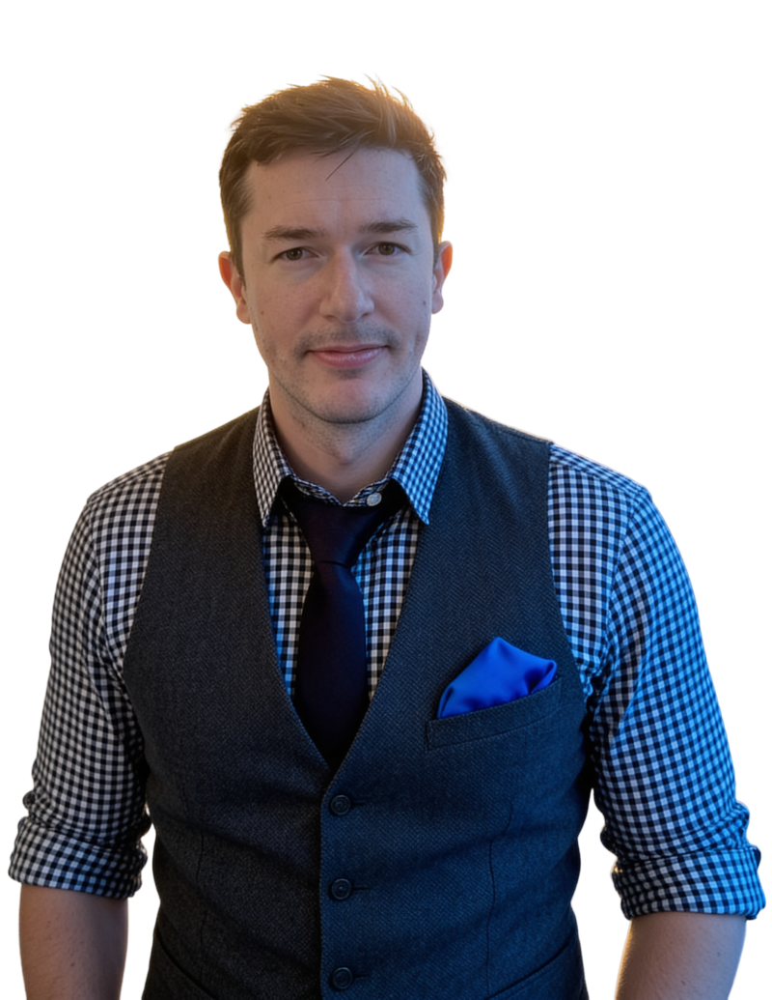
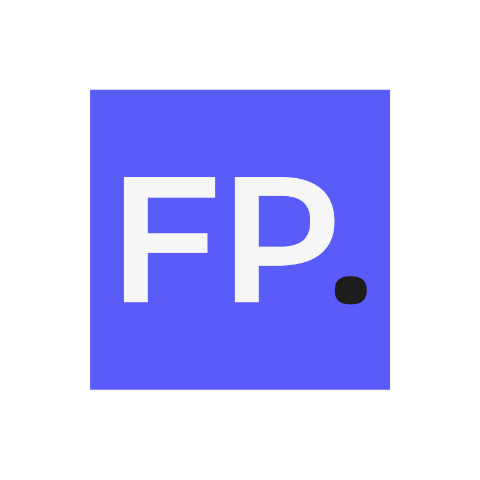
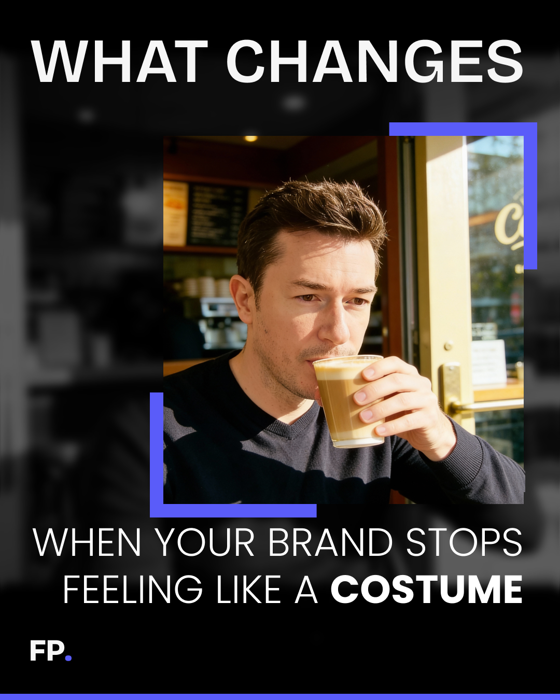

Strategist.
Dark button-down, rolled sleeves, laptop or desk context. The mode for diagnosis, written thinking, and advisory work.

The founder layer: position, repeatable presence, a face the model can hold consistent, and the wardrobe that keeps generated outputs on-brand.
Where the founder sits on the Founder Spectrum, and what that decision means for visible presence.
Buyers buy the person first and the service second. The company is the practice.
FP needs Florian visible enough to make the work trustworthy, but never so centered that the brand becomes founder theater.
Spotlight comes indirectly through diagnosis, generosity, proof, and taste.


Florian is the practice, but not the hero of the work.
FP needs Florian visible enough to make the work trustworthy, but never so centered that the brand becomes founder theater.
Spotlight comes indirectly through diagnosis, generosity, proof, and taste.
Host, not star. Messenger, not guru. Never in the first chair.
A small cast of repeatable modes, capped at three, so AI and humans recognize the founder without turning them into a costume.
Dark button-down, rolled sleeves, laptop or desk context. The mode for diagnosis, written thinking, and advisory work.
Vest and checkered shirt for room-facing work. Useful when the personal layer needs authority without keynote theater.


Dark sweater, tee, coffee, desk, or casual work context. Useful for reflective posts and quieter founder presence.


The face-consistency anchor for image generation. This sheet is only the face: the angles a model needs to render the same person every time. Wardrobe and context live in Outfits below.
Current face reference set. Feed these as the identity anchor when generating founder imagery so the face stays consistent across outputs.
Portrait references: florian-speaker-mic-stage.pngPortrait references: florian-speaker-vest-meeting.pngPortrait references: florian-strategist-night-office.pngPortrait references: florian-thinker-cafe-coffee.pngPortrait references: florian-thinker-laptop-casual.pngA formal face sheet (front, three-quarter left, three-quarter right, profile) is planned as the durable identity anchor. Until it exists, use the reference set above and keep the angle consistent with the job.
What the founder wears and the settings he appears in. Specific enough to recognize, quiet enough not to perform.

Finished personal-branding posts: pb-brand-costume.png Finished personal-branding posts: pb-clarity-from-fewer.png
Finished personal-branding posts: pb-clarity-from-fewer.png Finished personal-branding posts: pb-outsource-pov.png
Finished personal-branding posts: pb-outsource-pov.png Finished personal-branding posts: pb-tweaking-not-building.pngPortrait references: florian-speaker-mic-stage.pngPortrait references: florian-speaker-vest-meeting.pngPortrait references: florian-strategist-night-office.pngPortrait references: florian-thinker-cafe-coffee.pngPortrait references: florian-thinker-laptop-casual.png
Finished personal-branding posts: pb-tweaking-not-building.pngPortrait references: florian-speaker-mic-stage.pngPortrait references: florian-speaker-vest-meeting.pngPortrait references: florian-strategist-night-office.pngPortrait references: florian-thinker-cafe-coffee.pngPortrait references: florian-thinker-laptop-casual.png